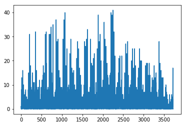

4. Tutorial¶
4.1. Use datasets from UCTB¶
UCTB is designed for urban computing in various scenarios. Currently, It presets a public dataset about bikesharing. This dataset was collected from U.S. open data portals, including 49 million, 13 million, and 14 million historical flow records in New York City (NYC), Chicago (Chicago) and Washington, D.C (DC), respectively. Each record contains the start station, start time, stop station, stop time, etc. We predict the number of bikesharing demands in each station (i.e., the number of bike borrowers).
In the future version, we consider releasing more datasets covering other applications such as ridesharing, metro traffic flow, and electrical charging station usage. If you are interested in this project, making a contribution to the dataset is strongly welcomed :)
To help better accuse dataset, UCTB provides data loader APIs UCTB.dataset.data_loader, which can be used to preprocess data, including data division, normalization, and extract temporal and spatial knowledge.
In the following tutorial, we illustrate how to use UCTB.dataset.data_loader APIs to inspect the bikesharing dataset.
from UCTB.dataset.data_loader import NodeTrafficLoader
We use 10% (data_range=0.1) of the bike data in New York as an example. Firstly, let’s initialize a NodeTrafficLoader object:
data_loader = NodeTrafficLoader(data_range=0.1, dataset='Bike', city='NYC')
Take a look at the necessary information about the dataset:
# Traffic data
print('Data time range', data_loader.dataset.time_range)
print('Traffic data shape:', data_loader.traffic_data.shape)
# The first dimension of data_loader.traffic_data is the length of time-sequence.
# The second dimension is the number of stations.
print('Time fitness:', data_loader.dataset.time_fitness, 'minutes')
print('Time sequence length:', data_loader.traffic_data.shape[0])
print('Number of stations:', data_loader.traffic_data.shape[1])
Data time range ['2013-07-01', '2017-09-30']
Traffic data shape: (3724, 717)
Time fitness: 60 minutes
Time sequence length: 3724
Number of stations: 717
Visualize the distribution of the traffic data:
import matplotlib.pyplot as plt
plt.plot(data_loader.traffic_data[:, 0])
plt.show()

4.2. Build your own datasets¶
To make loader APIs compatible with your own data, you can store it in a dict variable with formats as follows.
# Let's say ``my_dataset`` is your dataset.
my_dataset = {
"TimeRange": ['YYYY-MM-DD', 'YYYY-MM-DD'],
"TimeFitness": 60, # Minutes
"Node": {
"TrafficNode": np.array, # With shape [time, num-of-node]
"TrafficMonthlyInteraction": np.array, # With shape [month, num-of-node. num-of-node]
"StationInfo": {id: [build-time, # Could also be int
lat, lng, name]},
"POI": []
},
"Grid": {
"TrafficGrid": [],
"GridLatLng": [],
"POI": []
},
"ExternalFeature": {
"Weather": [time, weather-feature-dim]
}
}
And then save it with package pickle to a local path pkl_file_name.
import pickle
pkl_file_name = './my_dataset.pkl'
with open(pkl_file_name, 'wb') as handle:
pickle.dump(my_dataset, handle, protocol=pickle.HIGHEST_PROTOCOL)
Finally, you can make uses of your dataset by UCTB’s loader APIs:
data_loader = NodeTrafficLoader(dataset=pkl_file_name)
4.3. Use build-in models from UCTB¶
4.3.1. Use single temporal feature in regression¶
UCTB provides many classical and popular spatial-temporal predicting models. These models can be used to either predicting series for a single station or for all stations. You can find the concrete instruction in UCTB.model.
The following example shows how to use a Hidden Markov model to handle a simple time series predicting problem. We will predict the the number of bikesharing demands test_y(i.e., the number of bike borrowers) for a specific station target_node. In this case, the model takes a few recent timesteps in the past as inputs and then predict the future.
import numpy as np
import matplotlib.pyplot as plt
from UCTB.model import HMM
from UCTB.dataset import NodeTrafficLoader
from UCTB.evaluation import metric
data_loader = NodeTrafficLoader(data_range=0.1, dataset='Bike', city='NYC',
closeness_len=12, period_len=0, trend_len=0,
test_ratio=0.2, normalize=False, with_lm=False, with_tpe=False)
Split the data into train and test set.
target_node = 233
train_x, test_x = data_loader.train_closeness[:, target_node:target_node+1, -1, 0], data_loader.test_closeness[:, target_node, :, :]
test_y = data_loader.test_y[:, target_node, 0]
Inspect the shape of data.
print(train_x.shape)
print(test_x.shape)
print(test_y.shape)
(2967, 1)
(745, 12, 1)
(745,)
Build the model.
model = HMM(num_components=8, n_iter=50)
Now, we can fit the model to the train dataset.
model.fit(x=train_x)
Status: converged
When the model is converged, we make predictions on test data.
predictions = []
for t in range(test_x.shape[0]):
p = np.squeeze(model.predict(x=test_x[t], length=1))
predictions.append(p)
We can evaluate the performance of the model by build-in UCTB.evaluation APIs.
test_rmse = metric.rmse(predictions, test_y, threshold=0)
test_rmse
3.76137200105079
4.3.2. Use multiple temporal features in regression¶
In this case, let’s take more temporal knowledge about target_node into account. Specifically, we will concatenate factors, including closeness, period, and trend, and use XGBoost as the predicting model.
import numpy as np
import matplotlib.pyplot as plt
from UCTB.model import XGBoost
from UCTB.dataset import NodeTrafficLoader
from UCTB.evaluation import metric
data_loader = NodeTrafficLoader(data_range=0.1, dataset='Bike', city='NYC',
closeness_len=6, period_len=7, trend_len=4,
test_ratio=0.2, normalize=False, with_lm=False, with_tpe=False)
target_node = 233
train_closeness = data_loader.train_closeness[:, target_node, :, 0]
train_period = data_loader.train_period[:, target_node, :, 0]
train_trend = data_loader.train_trend[:, target_node, :, 0]
train_y = data_loader.train_y[:, target_node, 0]
test_closeness = data_loader.test_closeness[:, target_node, :, 0]
test_period = data_loader.test_period[:, target_node, :, 0]
test_trend = data_loader.test_trend[:, target_node, :, 0]
test_y = data_loader.test_y[:, target_node, 0]
train_X = np.concatenate([train_closeness, train_period, train_trend], axis=-1)
test_X = np.concatenate([test_closeness, test_period, test_trend], axis=-1)
print(train_X.shape)
print(train_y.shape)
print(test_X.shape)
print(test_y.shape)
model = XGBoost(n_estimators=100, max_depth=3, objective='reg:linear')
model.fit(train_X, train_y)
predictions = model.predict(test_X)
print('Test RMSE', metric.rmse(predictions, test_y, threshold=0))
Test RMSE 3.3267457